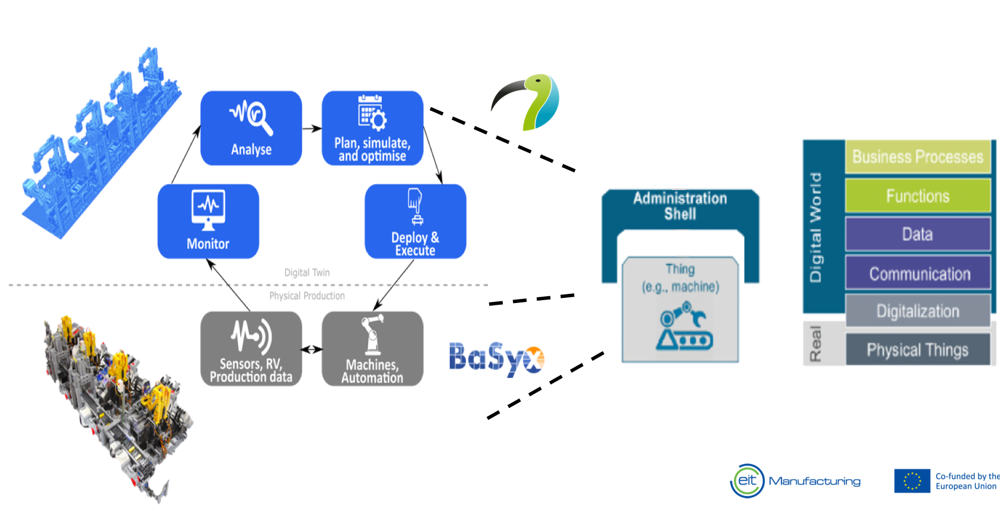

Development environment

Papyrus4Manufacturing is graphical modeling tool for Industry 4.0 and 5.0 applications that complies with multiple industrial standards and architectures. Moreover, it is extended to support new concepts and technologies, harmonizing both practical and research directions.
Industrial Standards Compliance
A model-driven engineering tool and methodology that is compliant with industrial standards (e.g. Asset Administration Shell, OPC UA) and applicable in industrial paradigms and architecture (e.g. CSS, ISA-95, RAMI4.0)
Seamless Integration
Integrated with Industry 4.0 technologies and libraries (e.g. BaSyx, Eclipse Milo, ROS 2) through flexible code generators and simulation tools (e.g. PhySim). Supporting rich features: +10 network protocols, security, and interactive GUI.